Draws bar plots with flexible fill, grouping, labelling, and annotation options. Supports both simple single-colour bars and grouped bars (dodged or stacked). Bars can be filled by a categorical variable (discrete colour scale), a continuous variable (colour gradient), or a fixed colour.
The function supports count aggregation (omit y to plot
observation counts), proportion scaling (scale_y = TRUE
for grouped bars), background stripes (add_bg), bar labels, trend
lines, horizontal reference lines, and splitting into separate sub-plots
via split_by.
SplitBarPlot (also known as WaterfallPlot) draws a divergent bar plot
where bars extend left (negative values) and right (positive values) from a
central zero line. The bar fill colour and opacity can encode additional
variables, and the vertical ordering of categories is fully customisable.
The function supports split_by to produce separate panels, facet_by for grouped views within panels, and alpha_by for encoding a secondary numeric variable via opacity.
Usage
BarPlot(
data,
x,
x_sep = "_",
y = NULL,
flip = FALSE,
fill_by = TRUE,
fill_name = NULL,
line_name = NULL,
label_nudge = 0.02,
label = NULL,
label_fg = "black",
label_size = 4,
label_bg = "white",
label_bg_r = 0.1,
group_by = NULL,
group_by_sep = "_",
group_name = NULL,
split_by = NULL,
split_by_sep = "_",
facet_by = NULL,
facet_scales = "fixed",
facet_ncol = NULL,
facet_nrow = NULL,
facet_byrow = TRUE,
facet_args = list(),
add_bg = FALSE,
bg_palette = "stripe",
bg_palcolor = NULL,
bg_alpha = 0.2,
add_line = NULL,
line_color = "red2",
line_width = 0.6,
line_type = 2,
add_trend = FALSE,
trend_color = "black",
trend_linewidth = 1,
trend_ptsize = 2,
theme = "theme_this",
theme_args = list(),
palette = NULL,
palcolor = NULL,
palreverse = FALSE,
alpha = 1,
lower_quantile = 0,
upper_quantile = 0.99,
lower_cutoff = NULL,
upper_cutoff = NULL,
x_text_angle = 0,
aspect.ratio = 1,
y_min = NULL,
y_max = NULL,
position = "auto",
position_dodge_preserve = "total",
legend.position = "right",
legend.direction = "vertical",
title = NULL,
subtitle = NULL,
xlab = NULL,
ylab = NULL,
keep_empty = FALSE,
keep_na = FALSE,
expand = waiver(),
width = waiver(),
combine = TRUE,
nrow = NULL,
ncol = NULL,
byrow = TRUE,
seed = 8525,
axes = NULL,
axis_titles = axes,
guides = NULL,
design = NULL,
...
)
SplitBarPlot(
data,
x,
y,
y_sep = "_",
flip = FALSE,
split_by = NULL,
split_by_sep = "_",
alpha_by = NULL,
alpha_reverse = FALSE,
alpha_name = NULL,
order_y = list(`+` = c("x_desc", "alpha_desc"), `-` = c("x_desc", "alpha_asc")),
bar_height = 0.9,
lineheight = 0.5,
max_charwidth = 80,
fill_by = NULL,
fill_by_sep = "_",
fill_name = NULL,
direction_name = "direction",
direction_pos_name = "positive",
direction_neg_name = "negative",
theme = "theme_this",
theme_args = list(),
palette = "Spectral",
palcolor = NULL,
palreverse = FALSE,
lower_quantile = 0,
upper_quantile = 0.99,
lower_cutoff = NULL,
upper_cutoff = NULL,
facet_by = NULL,
facet_scales = "free_y",
facet_nrow = NULL,
facet_ncol = NULL,
facet_byrow = TRUE,
aspect.ratio = 1,
x_min = NULL,
x_max = NULL,
legend.position = "right",
legend.direction = "vertical",
title = NULL,
subtitle = NULL,
xlab = NULL,
ylab = NULL,
keep_empty = FALSE,
keep_na = FALSE,
combine = TRUE,
nrow = NULL,
ncol = NULL,
byrow = TRUE,
seed = 8525,
axes = NULL,
axis_titles = axes,
guides = NULL,
design = NULL,
...
)
WaterfallPlot(
data,
x,
y,
y_sep = "_",
flip = FALSE,
split_by = NULL,
split_by_sep = "_",
alpha_by = NULL,
alpha_reverse = FALSE,
alpha_name = NULL,
order_y = list(`+` = c("x_desc", "alpha_desc"), `-` = c("x_desc", "alpha_asc")),
bar_height = 0.9,
lineheight = 0.5,
max_charwidth = 80,
fill_by = NULL,
fill_by_sep = "_",
fill_name = NULL,
direction_name = "direction",
direction_pos_name = "positive",
direction_neg_name = "negative",
theme = "theme_this",
theme_args = list(),
palette = "Spectral",
palcolor = NULL,
palreverse = FALSE,
lower_quantile = 0,
upper_quantile = 0.99,
lower_cutoff = NULL,
upper_cutoff = NULL,
facet_by = NULL,
facet_scales = "free_y",
facet_nrow = NULL,
facet_ncol = NULL,
facet_byrow = TRUE,
aspect.ratio = 1,
x_min = NULL,
x_max = NULL,
legend.position = "right",
legend.direction = "vertical",
title = NULL,
subtitle = NULL,
xlab = NULL,
ylab = NULL,
keep_empty = FALSE,
keep_na = FALSE,
combine = TRUE,
nrow = NULL,
ncol = NULL,
byrow = TRUE,
seed = 8525,
axes = NULL,
axis_titles = axes,
guides = NULL,
design = NULL,
...
)Arguments
- data
A data frame.
- x
A character string specifying the column name of the data frame to plot for the x-axis.
- x_sep
A character string to join multiple
xcolumns. Default"_".- y
A character string specifying the column name of the data frame to plot for the y-axis.
- flip
Logical; if
TRUE, swap the x and y axes.- fill_by
A variable used to fill the bars. Both categorical and numeric columns are accepted:
TRUE(default) — fill by the x-axis values.FALSE— solid fill (first palette colour).A column name (character/factor) — discrete colour scale.
A column name (numeric) — continuous gradient with quantile / cutoff controls.
Ignored when
group_byis provided (fill is determined bygroup_by).- fill_name
A character string for the fill legend title. Only applies when
group_by = NULLand the fill is fromfill_by.- line_name
Legend name for the reference line.
- label_nudge
A numeric value controlling the distance between labels and the bar top, expressed as a fraction of the data range.
- label
A column name (or
TRUE) for text labels on bars. WhenTRUE, the y-axis values are labelled. When a column name, the values in that column are used.- label_fg
A character string specifying the label text colour.
- label_size
A numeric value specifying the label text size.
- label_bg
A character string specifying the label background colour.
- label_bg_r
A numeric value specifying the label background corner radius.
- group_by
Columns to group the data for plotting For those plotting functions that do not support multiple groups, They will be concatenated into one column, using
group_by_sepas the separator- group_by_sep
The separator for multiple group_by columns. See
group_by- group_name
A character string for the group fill legend title. When
NULL, thegroup_bycolumn name is used.- split_by
The column(s) to split the data by for separate sub-plots.
- split_by_sep
Separator for concatenated
split_bycolumns.- facet_by
A character string specifying the column name of the data frame to facet the plot. Otherwise, the data will be split by
split_byand generate multiple plots and combine them into one usingpatchwork::wrap_plots- facet_scales
Whether to scale the axes of facets. Default is "fixed" Other options are "free", "free_x", "free_y". See
ggplot2::facet_wrap- facet_ncol
A numeric value specifying the number of columns in the facet. When facet_by is a single column and facet_wrap is used.
- facet_nrow
A numeric value specifying the number of rows in the facet. When facet_by is a single column and facet_wrap is used.
- facet_byrow
A logical value indicating whether to fill the plots by row. Default is TRUE.
- facet_args
A list of additional arguments passed to the faceting function (e.g.,
scales,labeller).- add_bg
Logical; add alternating background stripes behind the bars.
- bg_palette
Palette for the background stripes.
- bg_palcolor
Custom colours for the background stripes.
- bg_alpha
Alpha transparency for the background stripes.
- add_line
A numeric y-intercept for a horizontal reference line.
- line_color
Colour of the reference line.
- line_width
Width of the reference line.
- line_type
Linetype of the reference line (e.g., 1 = solid, 2 = dashed).
- add_trend
Logical; add a trend line and points connecting the bar tops.
- trend_color
Colour of the trend line.
- trend_linewidth
Width of the trend line.
- trend_ptsize
Size of the trend line points.
- theme
A character string or a theme class (i.e. ggplot2::theme_classic) specifying the theme to use. Default is "theme_this".
- theme_args
A list of arguments to pass to the theme function.
- palette
A character string specifying the palette to use. A named list or vector can be used to specify the palettes for different
split_byvalues.- palcolor
A character string specifying the color to use in the palette. A named list can be used to specify the colors for different
split_byvalues. If some values are missing, the values from the palette will be used (palcolor will be NULL for those values).- palreverse
A logical value indicating whether to reverse the palette. Default is FALSE.
- alpha
A numeric value specifying the transparency of the plot.
- lower_quantile, upper_quantile
Lower and upper quantiles for the continuous color/fill scale. The actual cutoffs are determined by these quantiles when
lower_cutoffandupper_cutoffareNULL. Defaults:lower_quantile = 0,upper_quantile = 0.99.- lower_cutoff, upper_cutoff
Explicit lower and upper cutoffs for the continuous color/fill scale. When
NULL(the default), the cutoffs are determined bylower_quantileandupper_quantileviaquantile. Values outside the[lower_cutoff, upper_cutoff]range are clamped (winsorized) to the nearest cutoff value.- x_text_angle
A numeric value specifying the angle of the x-axis text.
- aspect.ratio
A numeric value specifying the aspect ratio of the plot.
- y_min, y_max
Numeric limits for the y-axis (or x-axis when flipped).
- position
A character string specifying the bar layout:
"auto"(default: dodge when ≤5 groups, stack otherwise),"dodge"(side-by-side), or"stack"(stacked on top of each other).- position_dodge_preserve
A character string passed to
position_dodge2():"total"preserves the overall bar group width;"single"preserves individual bar widths.- legend.position
A character string specifying the position of the legend. if
waiver(), for single groups, the legend will be "none", otherwise "right".- legend.direction
A character string specifying the direction of the legend.
- title
A character string specifying the title of the plot. A function can be used to generate the title based on the default title. This is useful when split_by is used and the title needs to be dynamic.
- subtitle
A character string specifying the subtitle of the plot.
- xlab
A character string specifying the x-axis label.
- ylab
A character string specifying the y-axis label.
- keep_empty
One of FALSE, TRUE and "level". It can also take a named list to specify different behavior for different columns. Without a named list, the behavior applies to the categorical/character columns used on the plot, for example, the
x,group_by,fill_by, etc.FALSE(default): Drop empty factor levels from the data before plotting.TRUE: Keep empty factor levels and show them as a separate category in the plot."level": Keep empty factor levels, but do not show them in the plot. But they will be assigned colors from the palette to maintain consistency across multiple plots. Alias:levels
- keep_na
A logical value or a character to replace the NA values in the data. It can also take a named list to specify different behavior for different columns. If TRUE or NA, NA values will be replaced with NA. If FALSE, NA values will be removed from the data before plotting. If a character string is provided, NA values will be replaced with the provided string. If a named vector/list is provided, the names should be the column names to apply the behavior to, and the values should be one of TRUE, FALSE, or a character string. Without a named vector/list, the behavior applies to categorical/character columns used on the plot, for example, the
x,group_by,fill_by, etc.- expand
The values to expand the x and y axes. It is like CSS padding. When a single value is provided, it is used for both axes on both sides. When two values are provided, the first value is used for the top/bottom side and the second value is used for the left/right side. When three values are provided, the first value is used for the top side, the second value is used for the left/right side, and the third value is used for the bottom side. When four values are provided, the values are used for the top, right, bottom, and left sides, respectively. You can also use a named vector to specify the values for each side. When the axis is discrete, the values will be applied as 'add' to the 'expansion' function. When the axis is continuous, the values will be applied as 'mult' to the 'expansion' function. See also https://ggplot2.tidyverse.org/reference/expansion.html
- width
A numeric value specifying the bar width (0–1).
- combine
Logical; when
TRUE(default), returns a combinedpatchworkobject. WhenFALSE, returns a named list ofggplotobjects.- ncol, nrow
Integer number of columns / rows for the combined layout.
- byrow
Logical; fill the combined layout by row (default
TRUE).- seed
A numeric seed for reproducibility.
- axes, axis_titles
Character strings for axis handling in the combined layout.
- guides
Character string for legend collection across panels.
- design
A custom layout design for the combined plot.
- ...
Additional arguments.
- y_sep
A character string to join multiple
ycolumns. Default"_".- alpha_by
A character string naming a numeric column to encode as bar opacity. Default
NULL(all bars fully opaque).- alpha_reverse
Logical; if
TRUE, reverse the alpha scale direction (solid for low values, transparent for high).- alpha_name
A character string for the alpha legend title.
- order_y
A named list controlling the vertical ordering of bars. Keys are
"+"(positive bars),"-"(negative bars), or"*"(all bars). Values are character vectors of ordering criteria:"x_asc","x_desc","alpha_asc","alpha_desc". Default orders positive bars by descending x and descending alpha; negative bars by descending x and ascending alpha.- bar_height
A numeric value (0–1) specifying the bar height as a fraction of the available category slot.
- lineheight
A numeric value controlling the line height of wrapped category labels.
- max_charwidth
An integer specifying the maximum character width for wrapping category labels.
- fill_by_sep
A character string to join multiple
fill_bycolumns. Default"_".- direction_name
A character string naming the internal direction column (used in legends). Default
"direction".- direction_pos_name
A character string labelling the positive direction in the legend. Default
"positive".- direction_neg_name
A character string labelling the negative direction in the legend. Default
"negative".- x_min, x_max
Numeric limits for the x-axis. When
NULL, symmetric limits are computed from the maximum absolute x-value.
Value
A ggplot object, a patchwork object, or a named list
of ggplot objects (when combine = FALSE), each with
height and width attributes in inches.
A ggplot object, a patchwork object, or a named list
of ggplot objects (when combine = FALSE), each with
height and width attributes in inches.
split_by workflow
When split_by is provided:
check_keep_na()andcheck_keep_empty()normalise thekeep_na/keep_emptyarguments for all columns (x,split_by,facet_by,group_by).The
split_bycolumn is validated and its NA / empty levels are processed. It is then removed from the per-columnkeep_na/keep_emptylists.The data is split by
split_by(preserving level order). Ifsplit_byisNULL, the data is wrapped in a single-element list with name"...".Per-split
palette,palcolor,legend.position, andlegend.directionare resolved viacheck_palette(),check_palcolor(), andcheck_legend().BarPlotAtomic()is called for each split.Results are combined via
combine_plots()(whencombine = TRUE) or returned as a named list.
When split_by is provided:
check_keep_na()andcheck_keep_empty()normalise thekeep_na/keep_emptyarguments.The
split_bycolumn is validated and its NA / empty levels are processed. It is then removed from the per-column lists.The data is split by
split_by(preserving level order).Per-split
palette,palcolor,legend.position, andlegend.directionare resolved.SplitBarPlotAtomic()is called for each split. Whentitleis a function, it receives the split level name for dynamic title generation.Results are combined via
combine_plots().
Examples
# \donttest{
data <- data.frame(
x = c("A", "B", "C", "D", "E", "F", "G", "H"),
y = c(10, 8, 16, 4, 6, 12, 14, 2),
group = c("G1", "G1", "G2", "G2", "G3", "G3", "G4", "G4"),
facet = c("F1", "F2", "F3", "F4", "F1", "F2", "F3", "F4")
)
# Single-colour bars
BarPlot(data, x = "x", y = "y")
# Solid fill (no colour mapping)
BarPlot(data, x = "x", y = "y", fill_by = FALSE)
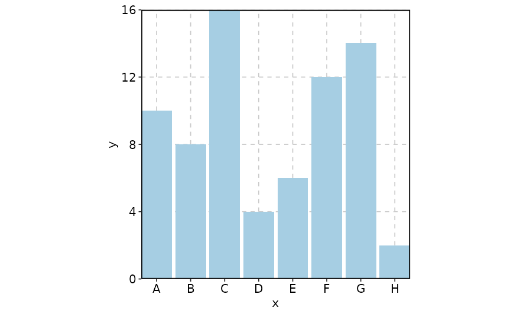
# Label bar tops
BarPlot(data, x = "x", y = "y", label = TRUE)
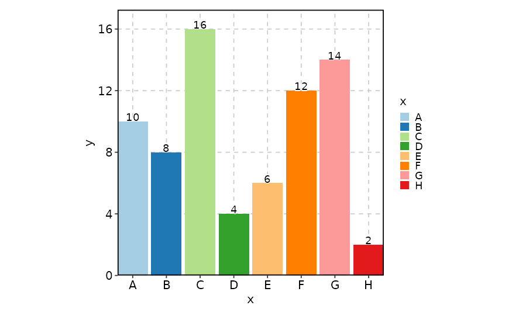
BarPlot(data, x = "x", y = "y", label = "facet", label_nudge = 0)
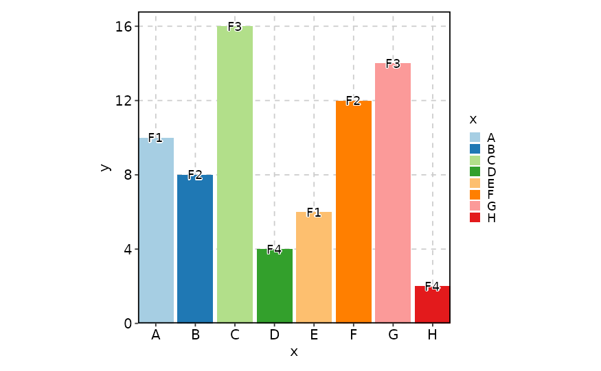
# Grouped bars
BarPlot(data, x = "group", y = "y", group_by = "x")
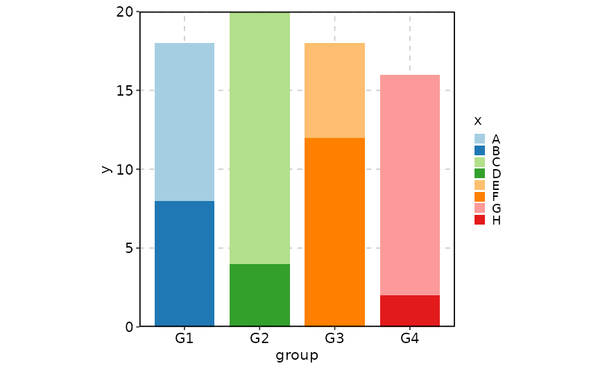
# Dodged bars with background stripes
BarPlot(data,
x = "group", y = "y", group_by = "x",
position = "dodge", add_bg = TRUE)
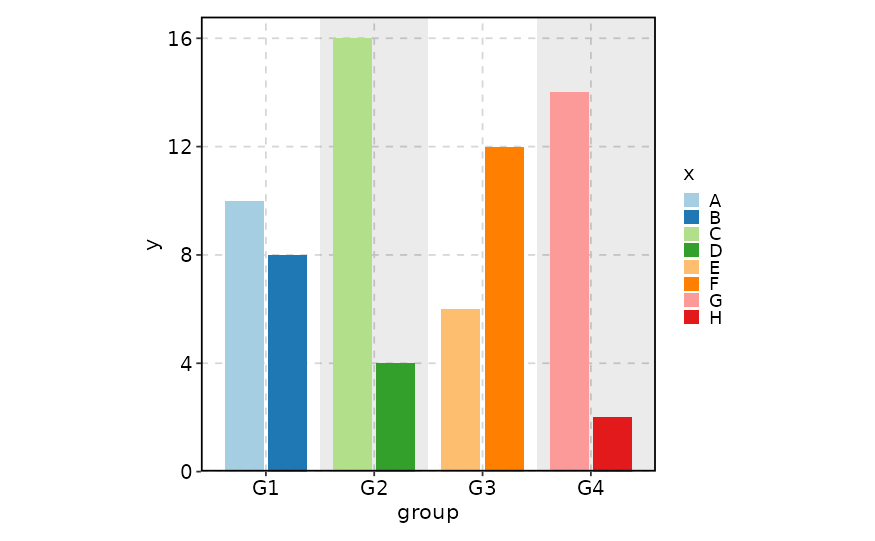
# split_by with faceting
BarPlot(data,
x = "x", y = "y", split_by = "group",
facet_by = "facet", position = "dodge", facet_ncol = 1)
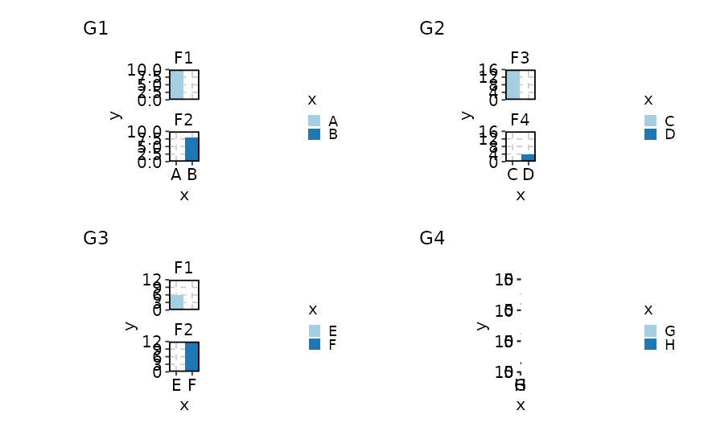
# split_by with collected guides
BarPlot(data,
x = "x", y = "y", split_by = "group", facet_by = "facet",
position = "dodge", facet_ncol = 1, guides = 'collect')
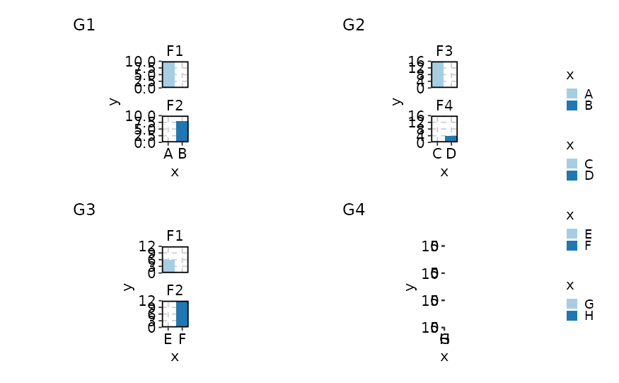
# Per-split palettes
BarPlot(data,
x = "x", y = "y", split_by = "group",
palette = list(G1 = "Reds", G2 = "Blues", G3 = "Greens", G4 = "Purp"),
facet_by = "facet", position = "dodge", facet_ncol = 1)
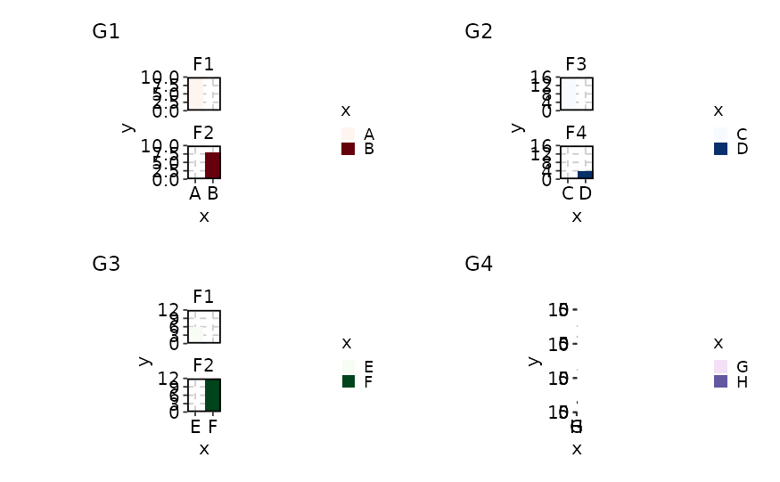
# Background stripe palette
BarPlot(data,
x = "group", y = "y", group_by = "x",
position = "dodge", add_bg = TRUE, bg_palette = "Spectral")
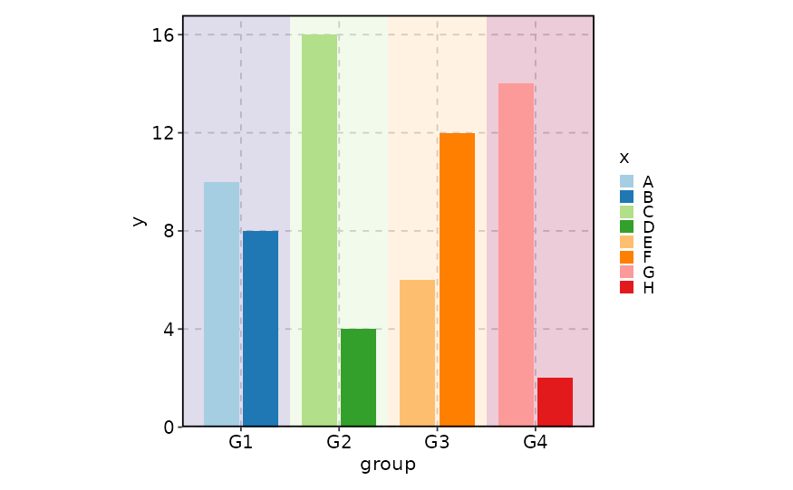
# Count bars (y = NULL)
BarPlot(data, x = "group", ylab = "count")
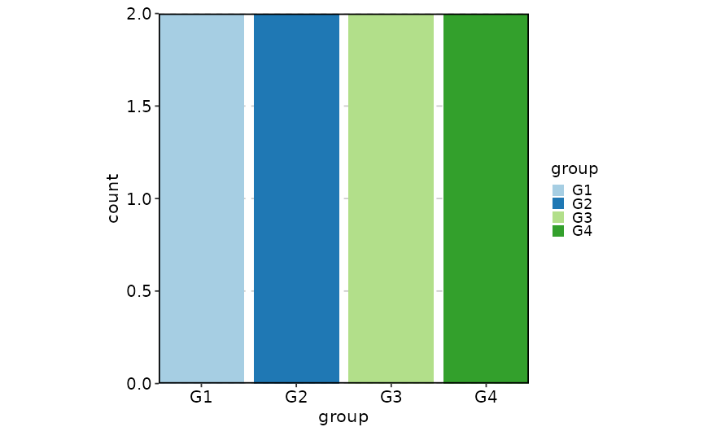
# Flipped axes
BarPlot(data, x = "group", flip = TRUE, ylab = "count")
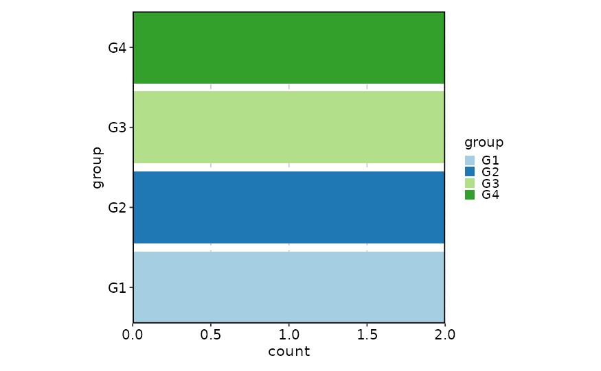
# Numeric fill_by with colour gradient
BarPlot(data, x = "x", y = "y", fill_by = "y", flip = TRUE)
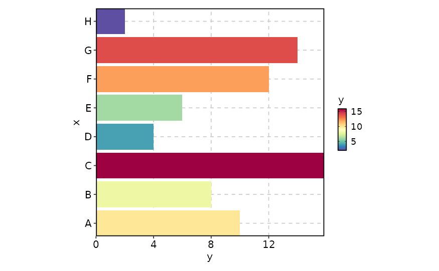
# Control fill colour scale limits (quantile)
BarPlot(data, x = "x", y = "y", fill_by = "y", flip = TRUE,
lower_quantile = 0.1, upper_quantile = 0.9)
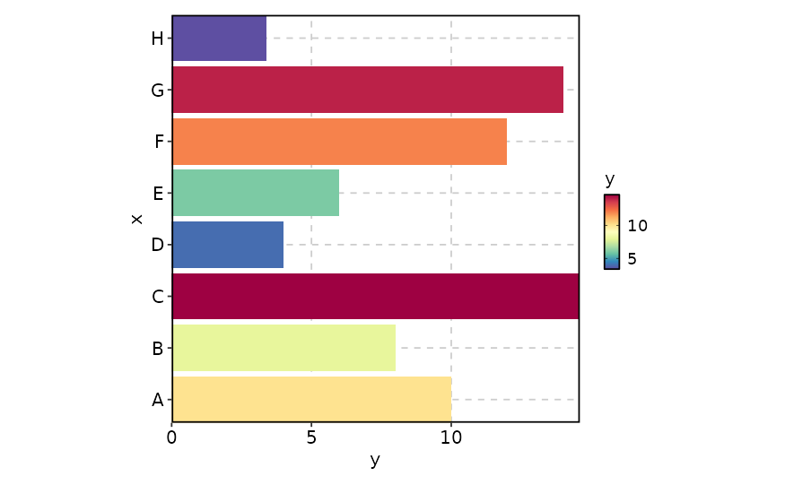
# Control fill colour scale limits (explicit cutoff)
BarPlot(data, x = "x", y = "y", fill_by = "y", flip = TRUE,
lower_cutoff = 5, upper_cutoff = 12)
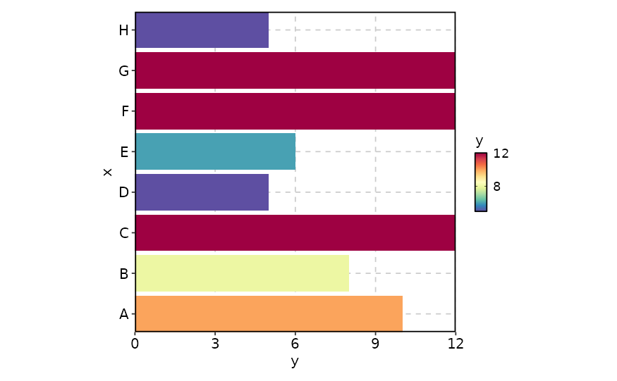
# keep_na and keep_empty examples
data <- data.frame(
x = factor(c("A", "B", "C", "D", "E", "F", NA, "H"),
levels = LETTERS[1:10]),
y = c(10, 8, 16, 4, 6, NA, 14, 2),
group = factor(c("G1", "G1", "G2", NA, "G3", "G3", "G5", "G5"),
levels = c("G1", "G2", "G3", "G4", "G5")),
facet = factor(c("F1", NA, "F3", "F4", "F1", "F2", "F3", "F4"),
levels = c("F1", "F2", "F3", "F4", "F5"))
)
# Default: NA and empty levels dropped
BarPlot(data, x = "x", y = "y")
#> Warning: Removed 1 row containing missing values or values outside the scale range
#> (`geom_col()`).
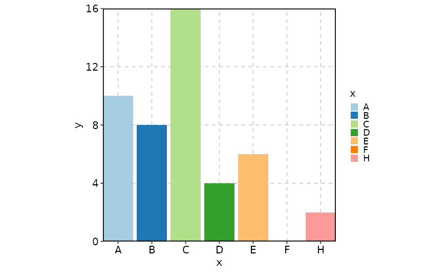
# Keep both NA and empty levels
BarPlot(data, x = "x", y = "y",
keep_na = TRUE, keep_empty = TRUE)
#> Warning: Removed 1 row containing missing values or values outside the scale range
#> (`geom_col()`).
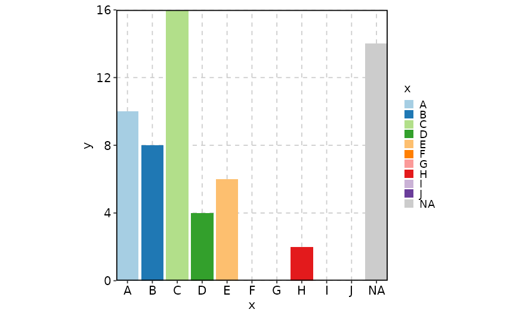
# With faceting
BarPlot(data, x = "x", y = "y",
keep_na = TRUE, keep_empty = TRUE, facet_by = "facet")
#> Warning: Removed 1 row containing missing values or values outside the scale range
#> (`geom_col()`).
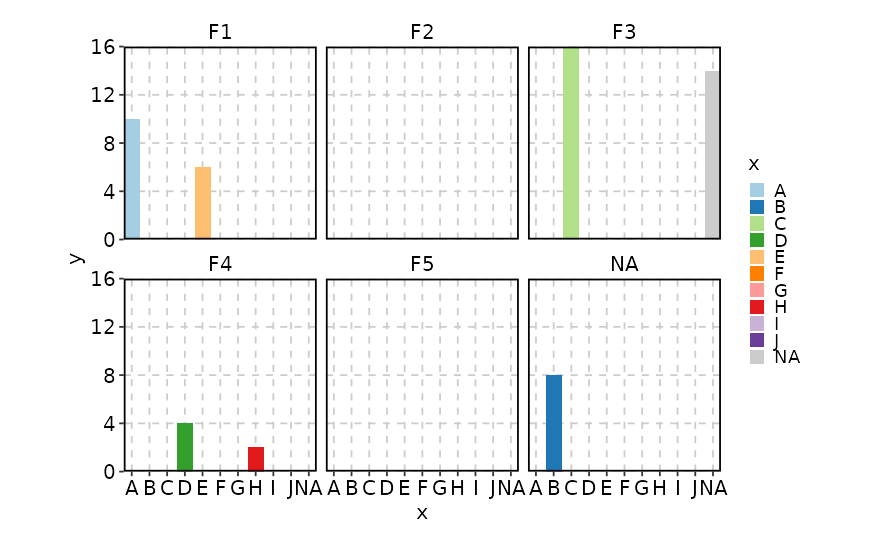
# Keep NA, hide empty levels but reserve their colours
BarPlot(data, x = "x", y = "y",
keep_na = TRUE, keep_empty = 'level')
#> Warning: Removed 1 row containing missing values or values outside the scale range
#> (`geom_col()`).
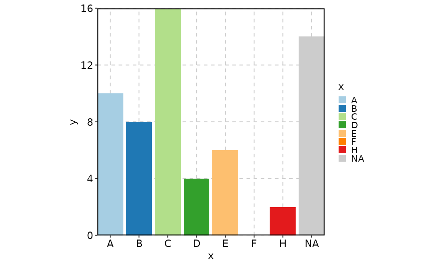
# Per-column keep_na / keep_empty
BarPlot(data, x = "x", y = "y",
keep_na = list(x = TRUE), keep_empty = list(x = FALSE))
#> Warning: Removed 1 row containing missing values or values outside the scale range
#> (`geom_col()`).
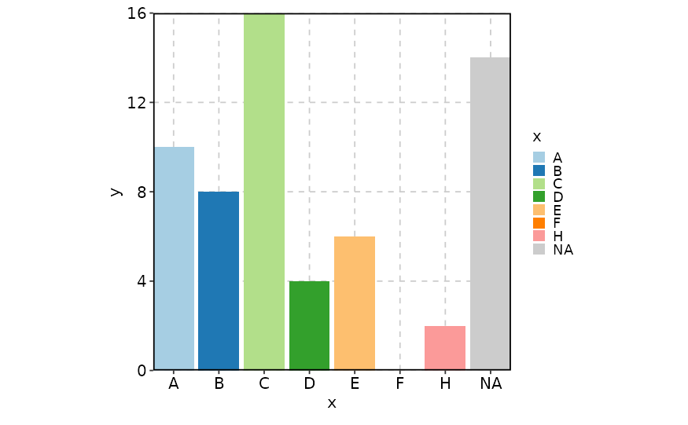
# Grouped bars with keep_na / keep_empty
BarPlot(data, x = "group", y = "y", group_by = "x")
#> Warning: Removed 1 row containing missing values or values outside the scale range
#> (`geom_col()`).
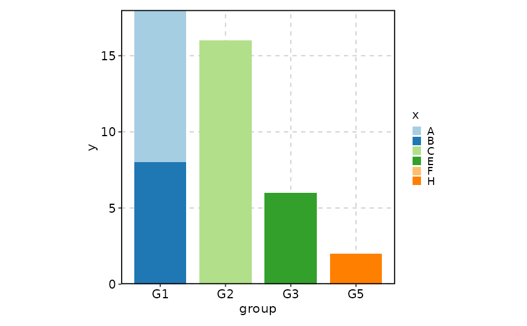
BarPlot(data, x = "group", y = "y", group_by = "x",
keep_na = TRUE, keep_empty = TRUE)
#> Warning: Removed 1 row containing missing values or values outside the scale range
#> (`geom_col()`).
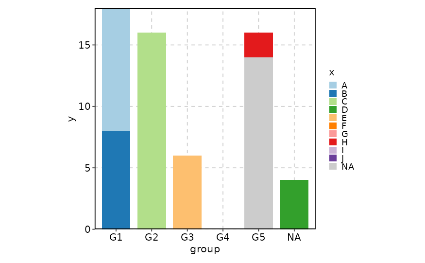
BarPlot(data, x = "group", y = "y", group_by = "x",
keep_na = TRUE, keep_empty = TRUE, facet_by = "facet")
#> Warning: Removed 1 row containing missing values or values outside the scale range
#> (`geom_col()`).
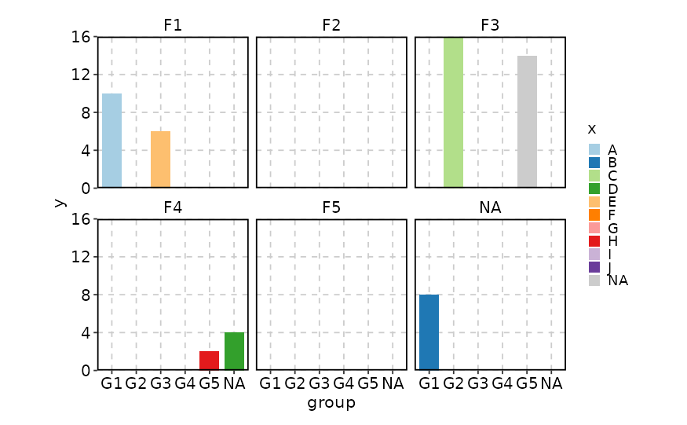
# Per-column on grouped bars
BarPlot(data, x = "group", y = "y", group_by = "x",
keep_na = list(x = TRUE, group = FALSE),
keep_empty = list(x = FALSE, group = TRUE))
#> Warning: Removed 1 row containing missing values or values outside the scale range
#> (`geom_col()`).
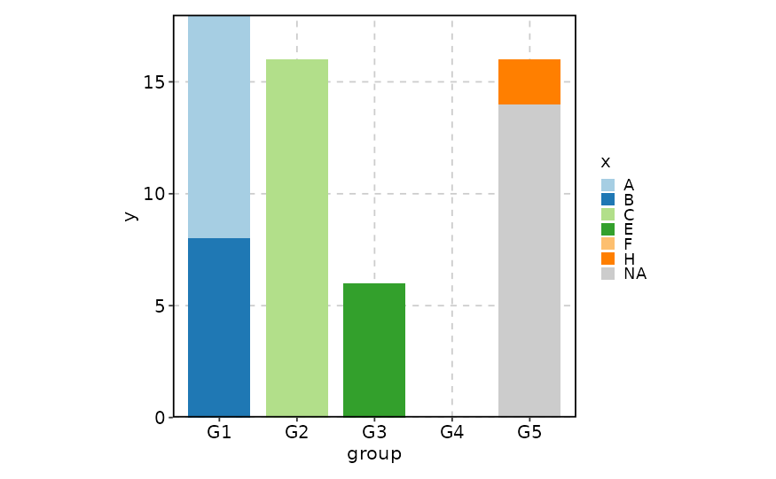
# }
# \donttest{
set.seed(8525)
data <- data.frame(
word = c("apple", "banana", "cherry", "date", "elderberry",
"It is a very long term with a lot of words"),
count = c(-10, 20, -30, 40, 50, 34),
score = c(1, 2, 3, 4, 5, 3.2),
group = c("A", "A", "B", "B", "C", "C")
)
# Basic split bar plot with alpha encoding
SplitBarPlot(data, x = "count", y = "word", alpha_by = "score")
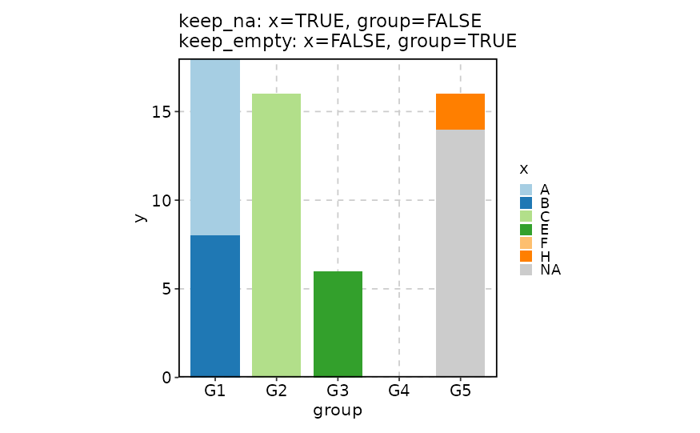
# Control label wrapping
SplitBarPlot(data, x = "count", y = "word", alpha_by = "score",
max_charwidth = 30, lineheight = 1.1)
 # Fill by categorical variable
SplitBarPlot(data, x = "count", y = "word", fill_by = "group")
# Fill by categorical variable
SplitBarPlot(data, x = "count", y = "word", fill_by = "group")
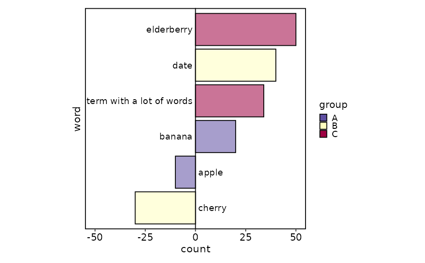
# Faceting
SplitBarPlot(data, x = "count", y = "word", facet_by = "group",
fill_name = "Direction")
 # Per-split palettes
SplitBarPlot(data, x = "count", y = "word", alpha_by = "score",
split_by = "group",
palette = c(A = "Reds", B = "Blues", C = "Greens"))
# Per-split palettes
SplitBarPlot(data, x = "count", y = "word", alpha_by = "score",
split_by = "group",
palette = c(A = "Reds", B = "Blues", C = "Greens"))
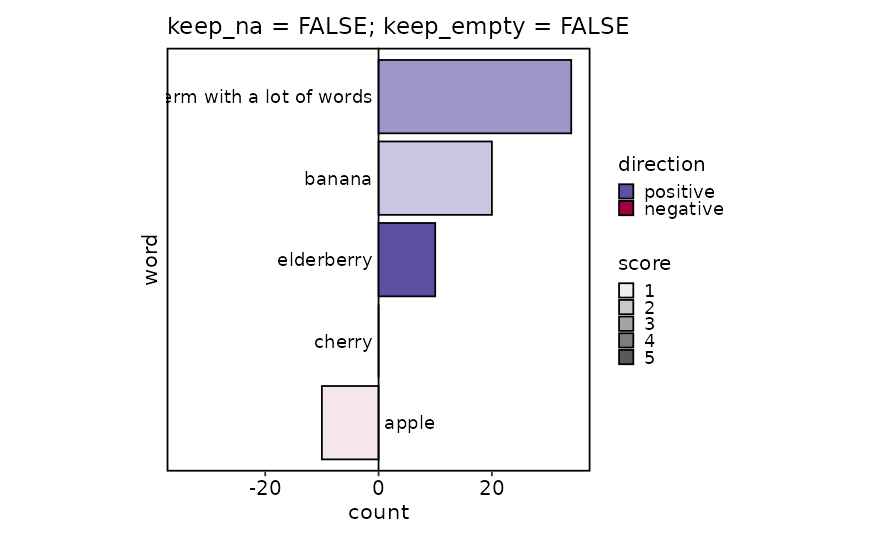
# keep_na and keep_empty examples
data <- data.frame(
word = factor(c("apple", "banana", "cherry", NA, "elderberry",
"It is a very long term with a lot of words"),
levels = c("apple", "banana", "cherry", "date", "elderberry",
"unused", "It is a very long term with a lot of words")),
count = c(-10, 20, NA, 40, 10, 34),
score = c(1, 2, 3, 4, 5, 3.2),
group = factor(sample(c("A", "A", "B", "B", "C", "C")),
levels = c("A", "B", "C", "D"))
)
# Default: NA and empty levels dropped
SplitBarPlot(data, x = "count", y = "word", alpha_by = "score")
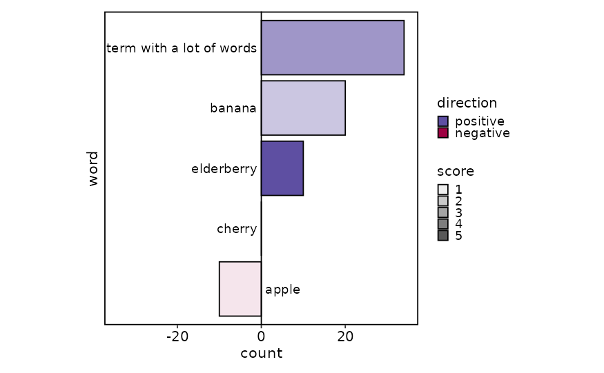
# Keep NA and empty levels
SplitBarPlot(data, x = "count", y = "word", alpha_by = "score",
keep_na = TRUE, keep_empty = TRUE)
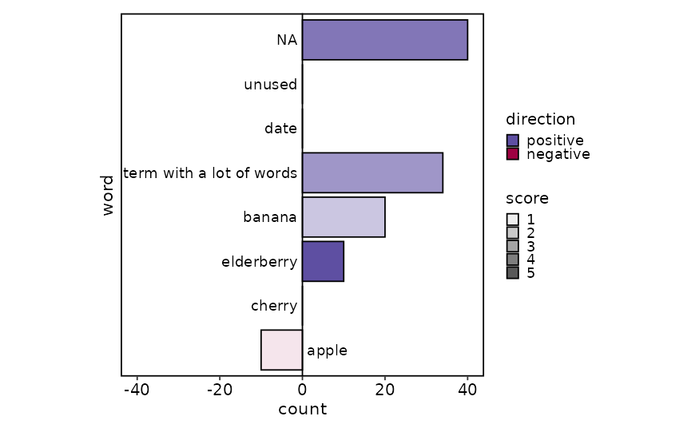
# Keep with faceting
SplitBarPlot(data, x = "count", y = "word", alpha_by = "score",
keep_na = TRUE, keep_empty = TRUE, facet_by = "group")
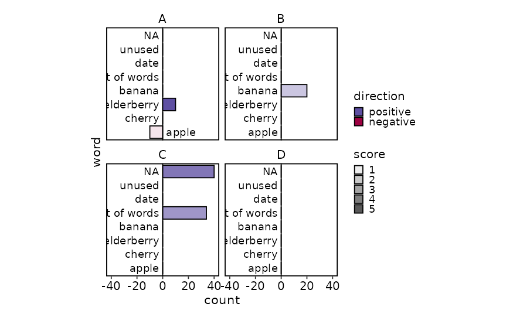
# Keep NA, hide empty levels (reserve colours)
SplitBarPlot(data, x = "count", y = "word", alpha_by = "score",
keep_na = TRUE, keep_empty = "level")
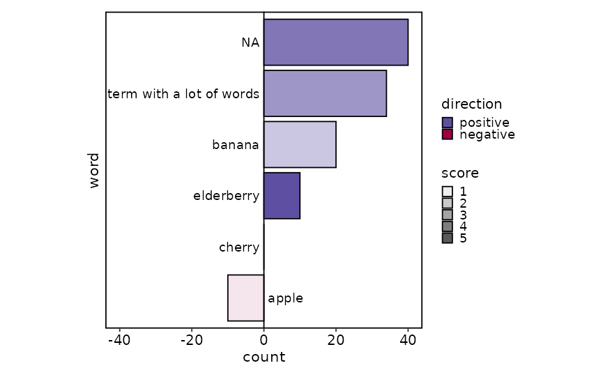
# Per-column control
SplitBarPlot(data, x = "count", y = "word", alpha_by = "score",
keep_na = list(word = FALSE), keep_empty = list(word = TRUE))
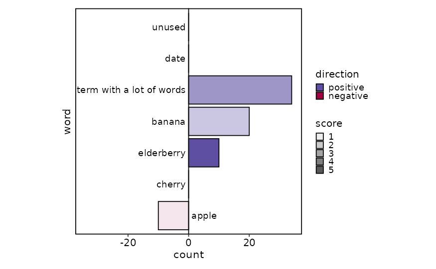
# Control fill colour scale limits
SplitBarPlot(data, x = "count", y = "word", fill_by = "score",
lower_cutoff = 1, upper_cutoff = 4)
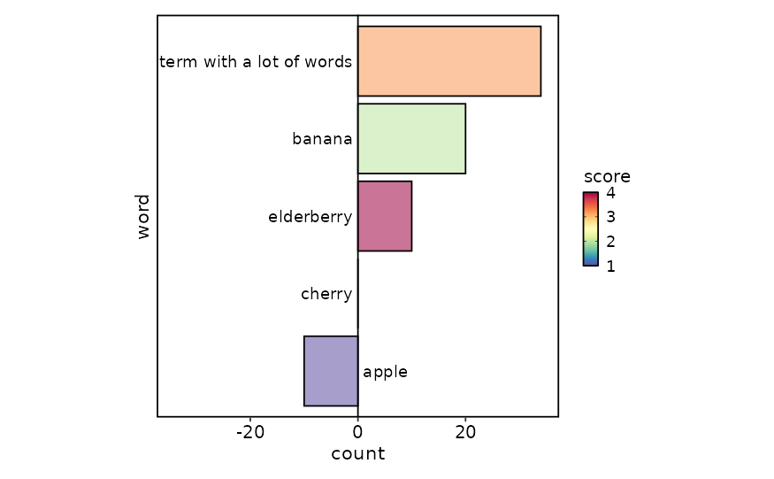
# }